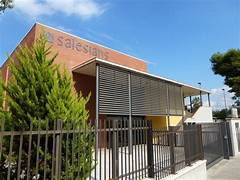

Experiencia
FCT internship at Salesians Sant Vicenç dels Horts
I completed a total of 383 hours of FCT internships at the Salesians Sant Vicenç dels Horts school, an educational institution recognized for its technical focus and educational values. During this internship, I collaborated with the technical and teaching staff, learning how a school's digital infrastructure works, and participating in IT support tasks.
Career at the Pare Enric d'Ossó school
I studied from P3 to 4th year of secondary school at the Pare Enric d'Ossó school, where I acquired a comprehensive education and fundamental values that have supported me in my academic and personal development.

Current studies
I am currently enrolled in the Intermediate Vocational Training Course in Microcomputer Systems and Networks, where I am expanding my knowledge of networks, hardware, operating systems, and technical support.

Assumed functions and responsibilities
- Configuration and maintenance of computer equipment.
- Troubleshooting basic software and hardware issues.
- Support in the management of the center's local networks.
- Installation and updating of operating systems and educational programs.